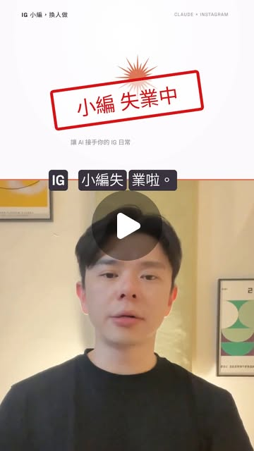

Instagram Agent Skill｜13 個 Claude 社群內容技能，保留人工發布的工作流

一句話摘要
這支 Instagram Reel 推薦一套面向社群內容工作的 Claude 技能包。原始 GitHub 專案可確認：它把 Reel、caption、留言、私訊、個人檔案健檢、週計畫等工作拆成 13 個技能，並把最重要的外部動作留給人決定：技能會寫草稿，但不會自行發文。
Reel 可確認的內容
Instagram 帳號 el_howeed 於 2026-10-23 發布此 Reel；擷取時畫面顯示 174 個讚、704 則留言，影片長約 37.27 秒、720×1280。
貼文文字表示這是一套「十三個給 Claude 用的技能」，可協助撰寫 Reels、貼文、留言、私訊並規劃一週 IG 計畫；並指向原作者 Jake Schincariol、稱其為開源 MIT 專案。貼文用「留言『小編』」作為索取延伸資料的方式；本次沒有互動該留言／私訊漏斗，也不把其中未公開的內容當作已驗證資料。
以約 4 秒與 12 秒的影片畫面為基礎，可辨識到「你的五個 IG 幫手」、「爆款開頭公式」、「你一定不知道…」、「我花三年才發現…」與「99% 的」等文字。因登入介面與解析度遮蔽，這不是完整影片逐字稿，也不據此推測未清楚顯示的步驟。
GitHub 原專案可確認什麼
原始專案是 Jake Schincariol 的 Instagram Agent Skill：
https://github.com/Jakeschincariol/instagram-agent-skill
README 與 LICENSE 可確認：
- 專案含 13 個技能目錄：ig-reel、ig-viral、ig-caption、ig-carousel、ig-story、ig-profile、ig-plan、ig-human、ig-comment、ig-reply、ig-dm、ig-repurpose、ig-audit。
- 它的輸出範圍涵蓋短影音腳本與鉤子、成效研究、caption、輪播貼文、限動、個人檔案檢核、內容週計畫、留言與回覆、私訊、內容再利用及發文後回顧。
- 專案附有本機文字處理工具，例如 hookscore.py、beats.py、caption.py、humanize.py、detect.py、swipe.py。README 說明它們處理本機文字，不需網路或上傳內容；實際執行時仍應自行檢查程式碼與資料流。
- 專案主張可作為 Claude Code skill、plugin 或把單一 SKILL.md 放進對話使用。不同 Claude 用戶端、版本與外掛機制可能改變可用性，請依當前官方文件與專案 README 操作。
- LICENSE 為 MIT License，版權標示為 2026 Jake Schincariol。MIT 授權允許使用、修改與散布，但需保留授權與版權聲明，且軟體按現狀提供、不含保證。
13 個技能如何拆解成可審核的社群流程
- 規劃：ig-plan 將週目標、內容形式與互動帳號整理成工作清單。
- 產稿：ig-reel、ig-caption、ig-carousel、ig-story 與 ig-repurpose 生成不同形式的內容草稿。
- 品質檢查：ig-human 處理常見 AI 文風與不可見字元；ig-profile、ig-audit 與 ig-viral 支援檢核及回顧。
- 互動草稿：ig-comment、ig-reply、ig-dm 將留言或私訊回覆分流成草稿。
- 人工核准與發布：確認事實、品牌語氣、著作權、對象、連結與排程後，才由帳號持有人完成對外操作。
這個拆法的價值在於讓「寫什麼」與「是否送出」分離。原專案 README 的明確立場是：Nothing gets posted until you say yes. These skills write. You post.
導入前的安全檢核表
- 從原始 GitHub repo 取得內容，不要只信任社群轉傳版本或留言私訊檔案。
- 先讀每個 SKILL.md 與 Python 工具，再決定是否放入全域或專案層級的技能資料夾。
- 以公開測試文案、測試帳號或測試 workspace 開始；不要先交出客戶名單、私訊紀錄、API key、cookie 或帳號登入態。
- 對外留言、私訊、發文與排程都設為人工最後確認；草稿品質不等於適合立即發布。
- 不將「鉤子分數」、「病毒研究」或單一 Reel 的互動數視為內容必然成功的預測。原 README 本身也把某些量化結果定位為限制條件下的測試，而非保證。
- 如需蒐集公開內容或分析競品，先檢查 Instagram 現行條款、官方 API 政策與資料使用邊界；避免以未授權的帳號自動化或抓取方式取得資料。
為什麼值得收進 AI 學習雷達
這不是一個「把 IG 帳號全權交給 AI」的宣傳案例，而是一個更實用的 Agent Skills 範本：依工作階段拆分技能、盡可能在本機處理文字，並對每一個公開動作保留人工核准。這種邊界同樣可延伸到課程宣傳、知識庫編輯、電子報草稿與品牌社群工作流。
延伸來源（2026-10-23）：Howie AI 學院公開安裝與沙盒測試頁
欒帥補充的 Howie AI 學院頁面，是這支 Reel 以「小編」關鍵字導向的公開資源頁：
https://howie-ai-academy.vercel.app/p/igbot?from=igbot
頁面沒有另行宣稱自有技能包，而是明確連回 Jake Schincariol 的原始 GitHub repo，並同樣標示 MIT 授權。它整理三種安裝路徑：直接交給 Claude 的 repo URL、在 Claude Code clone 後複製 `ig-*` skills、以及 Claude Code plugin marketplace 指令。實際採用前仍應以原 repo README 與當前 Claude Code 文件為準；不要把第三方教學頁的命令當成不經檢查就可執行的指令。
該頁另報告在乾淨沙盒中只測試了兩個技能，且未上網、未連任何帳號、輸入是清楚標示的範例資料：
- `ig-reel`：產出三個開場鉤子、分數、口白、畫面字與時間軸。頁面也指出鉤子評分工具只認英文，中文會先譯成英文後計算，所以數值只宜作為人工編輯參考。
- `ig-viral`：以「觀看數相對於帳號中位數的倍數」排序示例資料，而非只比較原始觀看數。頁面指出該示例中的中文鉤子均被英文句型分類器判為未分類，因此分類結果必須人工閱讀、不能視為中文內容分析能力的證明。
這些是發行者公開報告的測試邊界，並非本文重新安裝或重現的結果。最值得保留的實作原則仍是：先用範例資料與低敏感草稿測試；任何連帳號、抓取、私訊、留言、發文或排程，都不應越過人工核准點。
來源封存：`source-archive/2026-10-23-howie-ai-academy-igbot-followup.json`
證據與限制
- 本文的 Reel 作者、時間、caption、互動數、長度與尺寸取自登入受限但可渲染的 Instagram DOM／OpenGraph metadata，數字是擷取時快照，會變動。
- 影片內容僅保存兩個畫面時間點可辨識文字，未下載或公開重發原影片。
- GitHub README 與 LICENSE 證實專案結構與 MIT 授權；本次未安裝、未連接 Instagram、未測試任何自動化，也不保證社群貼文所稱的實際效果。
- 社群貼文要求留言關鍵字以取得技能包；未公開提供的文件、設定、承諾或連結均不納入本文事實。
來源封存：`source-archive/2026-10-23-instagram-el-howeed-claude-instagram-agent-skill.json`
原始連結
- Instagram Reel：https://www.instagram.com/reel/De1WH2Vy79A/?obrf=b2VxZGlsc252azM3
- Instagram canonical URL：https://www.instagram.com/el_howeed/reel/De1WH2Vy79A/
- Howie AI 學院補充頁：https://howie-ai-academy.vercel.app/p/igbot?from=igbot
- 原始 GitHub 專案：https://github.com/Jakeschincariol/instagram-agent-skill